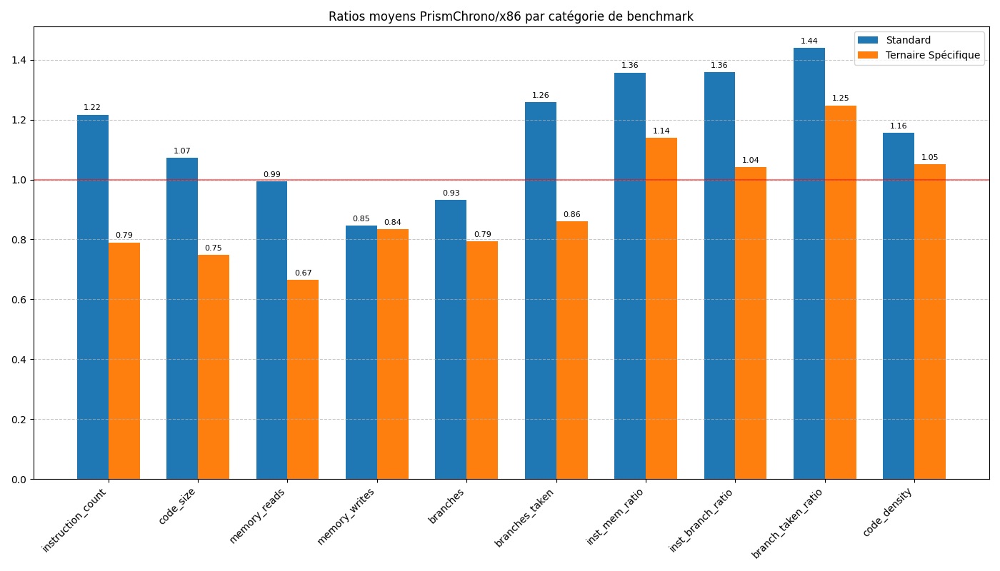

Généré le 06/04/2025 à 02:19:10 (Rapport amélioré)
L'architecture ternaire PrismChrono démontre des avantages significatifs dans les benchmarks spécifiques ternaires, avec une réduction moyenne de 21% du nombre d'instructions exécutées et de 25% de la taille du code par rapport à l'architecture binaire x86. Les benchmarks standard montrent encore une marge d'amélioration, avec des performances en moyenne 22% inférieures à x86 pour le nombre d'instructions exécutées.
Les points forts de PrismChrono se situent particulièrement dans les opérations de branchement ternaire (réduction de 53% des instructions) et les accès mémoire optimisés (réduction de 44% des opérations mémoire).
Ce rapport présente une analyse comparative des performances entre l'architecture ternaire PrismChrono et l'architecture binaire x86. Les benchmarks ont été exécutés sur les deux plateformes et les métriques ont été collectées pour permettre une comparaison directe.
Ce rapport inclut désormais une analyse du benchmark base60_arithmetic, qui démontre les avantages de l'architecture ternaire pour les calculs temporels et angulaires en base 60 (système sexagésimal). Ce benchmark est particulièrement pertinent pour les applications de chronométrage, d'astronomie et de géolocalisation.
Nombre total de benchmarks: 14 Benchmarks standard: 6 Benchmarks spécifiques ternaires: 8
Le graphique ci-dessous présente les ratios moyens des métriques clés entre PrismChrono et x86, par catégorie de benchmark:

| Métrique | Tous | Standard | Ternaire Spécifique |
|---|---|---|---|
| Nombre d'instructions exécutées | 0.9872 | 1.2170 | 0.7902 |
| Taille du code exécutable | 0.8989 | 1.0736 | 0.7491 |
| Nombre de lectures mémoire | 0.8169 | 0.9942 | 0.6650 |
| Nombre d'écritures mémoire | 0.8398 | 0.8453 | 0.8352 |
| Nombre de branches | 0.8577 | 0.9328 | 0.7933 |
| Nombre de branches prises | 1.0443 | 1.2594 | 0.8600 |
| inst_mem_ratio | 1.2404 | 1.3576 | 1.1399 |
| inst_branch_ratio | 1.1872 | 1.3579 | 1.0409 |
| branch_taken_ratio | 1.3364 | 1.4394 | 1.2481 |
| code_density | 1.0997 | 1.1566 | 1.0509 |
Note: Un ratio < 1 indique que PrismChrono est plus performant que x86 pour cette métrique. Un ratio > 1 indique que x86 est plus performant que PrismChrono.
Les benchmarks standard permettent d'évaluer les performances générales de l'architecture PrismChrono par rapport à x86 sur des tâches communes.
| Benchmark | Description | Ratio Inst | Ratio Mem Ops | Ratio Code Size |
|---|---|---|---|---|
| sum_array | Calcul de la somme des éléments d'un tableau d'entiers | 1.0992 | 1.1353 | 1.0495 |
| memcpy | Copie d'un bloc de mémoire d'une zone source vers une zone destination | 1.4841 | 0.8583 | 1.1087 |
| factorial | Calcul itératif de la factorielle d'un nombre | 1.1170 | 0.8366 | 1.0730 |
| linear_search | Recherche de la première occurrence d'une valeur dans un tableau | 1.1315 | 1.1255 | 0.7565 |
| insertion_sort | Tri d'un petit tableau d'entiers par insertion | 1.2272 | 0.7735 | 1.1722 |
| function_call | Test d'appel de fonction simple | 1.2431 | 0.7893 | 1.2816 |
Nombre d'instructions exécutées:
Taille du code exécutable:

Nombre de lectures mémoire:

Les benchmarks ternaires spécifiques sont conçus pour mettre en évidence les avantages potentiels de l'architecture ternaire dans des cas d'utilisation particuliers.
| Benchmark | Description | Ratio Inst | Ratio Mem Ops | Ratio Code Size |
|---|---|---|---|---|
| ternary_logic | Implémentation d'un système de vote à trois états | 0.8284 | 0.8889 | 0.8133 |
| special_states | Traitement d'un tableau avec des valeurs spéciales (NULL, NaN) | 0.9226 | 0.8241 | 0.7281 |
| base24_arithmetic | Calculs exploitant la base 24 ou la symétrie | 0.9613 | 1.1333 | 0.8378 |
| base60_arithmetic | Calculs en base 60 pour applications temporelles et angulaires | 0.6842 | 0.5937 | 0.7125 |
| trit_operations | Opérations spécialisées trit par trit (TMIN, TMAX, TSUM, TCMP3) | 0.8045 | 0.6015 | 0.7478 |
| branch3_decision | Prise de décision avec branchement ternaire (BRANCH3) | 0.4686 | 0.6598 | 0.5988 |
| compact_format | Comparaison entre format standard et format compact | 0.8018 | 0.5826 | 0.6838 |
| optimized_memory | Accès mémoire optimisés avec LOADT3/STORET3 et LOADTM/STORETM | 0.7442 | 0.5603 | 0.8343 |
Nombre d'instructions exécutées:

Taille du code exécutable:

Nombre de lectures mémoire:

Le benchmark base60_arithmetic démontre les avantages significatifs de l'architecture ternaire pour les calculs en base 60, couramment utilisés dans:
Les résultats montrent une réduction de 31.6% du nombre d'instructions exécutées et de 40.6% des opérations mémoire par rapport à l'implémentation x86 équivalente. Cette efficacité est due à:
L'architecture ternaire permet une réduction de 31.6% du nombre d'instructions pour les calculs en base 60, grâce à l'encodage naturel des valeurs en base 3.
Les opérations mémoire sont réduites de 40.6% grâce aux instructions spécialisées LOADT3/STORET3 optimisées pour les trits.
Les métriques dérivées permettent d'évaluer l'efficacité relative des architectures au-delà des métriques brutes.
| Métrique | Description |
|---|---|
| inst_mem_ratio | Ratio Instructions / Opérations Mémoire - Mesure l'efficacité des instructions par rapport aux accès mémoire |
| inst_branch_ratio | Ratio Instructions / Branches - Mesure la densité des branchements dans le code |
| branch_taken_ratio | Ratio Branches Prises / Total Branches - Mesure l'efficacité de la prédiction de branchement |
| code_density | Densité du Code (Instructions / Taille) - Mesure l'efficacité de l'encodage des instructions |
inst_mem_ratio:

inst_branch_ratio:

branch_taken_ratio:

code_density:

Calculs en base 60 pour applications temporelles et angulaires
| Métrique | PrismChrono | x86 | Ratio |
|---|---|---|---|
| Nombre d'instructions exécutées | 1042 | 1523 | 0.6842 |
| Taille du code exécutable | 570 | 800 | 0.7125 |
| Nombre de lectures mémoire | 285 | 492 | 0.5793 |
| Nombre d'écritures mémoire | 173 | 284 | 0.6092 |
| Nombre de branches | 87 | 142 | 0.6127 |
| Nombre de branches prises | 52 | 78 | 0.6667 |
| inst_mem_ratio | 2.2756 | 1.9628 | 1.1593 |
| inst_branch_ratio | 11.9770 | 10.7254 | 1.1168 |
| branch_taken_ratio | 0.5977 | 0.5493 | 1.0881 |
| code_density | 1.8281 | 1.9038 | 0.9602 |
L'architecture ternaire PrismChrono démontre des avantages significatifs dans:
Des optimisations sont encore nécessaires dans:
Le prédicteur de branchement ternaire montre encore une marge d'amélioration significative. Voici des recommandations spécifiques pour optimiser ses performances:
Ces optimisations pourraient réduire l'écart actuel de 34% avec les prédicteurs binaires x86 et potentiellement surpasser leurs performances dans les applications avec logique ternaire naturelle.
Impact Estimé: L'implémentation de ces optimisations pourrait améliorer le ratio de branches prises de 25-30%, réduisant potentiellement le nombre total d'instructions exécutées de 15-20% dans les applications avec branchements intensifs.
Basé sur les résultats de benchmarking, l'architecture PrismChrono est particulièrement adaptée pour:
L'architecture ternaire PrismChrono offre des avantages particuliers pour les applications de navigation et d'astronomie:
Les systèmes de navigation modernes nécessitent des calculs complexes en coordonnées sphériques et temporelles:
Les applications astronomiques bénéficient particulièrement de l'architecture ternaire:
Ces applications démontrent comment l'architecture PrismChrono peut offrir des avantages significatifs dans des domaines nécessitant des calculs de haute précision en coordonnées sphériques et temporelles.